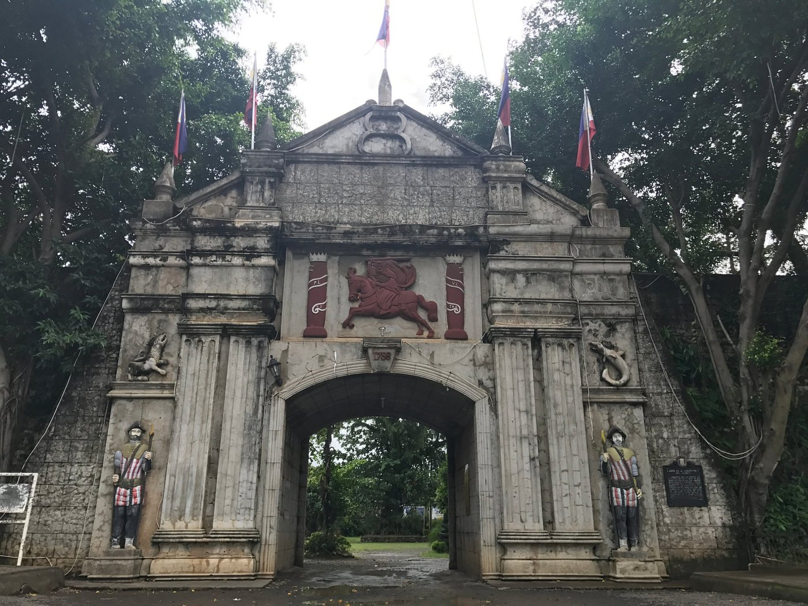

Top Tourist Spots in Ozamiz City
Cotta Shrine
The miraculous statue of the Birhen sa Cotta was brought to the City in the 1700s and was originally housed in the Cotta Fort and then transferred to the Immaculate Concepcion Church. The image mysteriously disappeared in the 1970s. In 2016, it was found in Manila by an antique collector and was returned to Ozamiz on December 8, 2017, the feast day celebration of the Birhen sa Cotta, in an emotional homecoming attended by thousands of pilgrims. The Birhen sa Cotta remains one of the most visited religious sites of the faithful in Mindanao.
Built in 1756, the fort was intended to repel the attacks of the Moro pirates, specifically for kidnapping people for slavery. (DCC/PIA-10)
The lighthouse of the Cotta Fort.
Ozamiz City Cathedral

The stunning facade of the Ozamiz City Cathedral.

Interior view showcasing the beautiful stained glass windows.

Evening view of the cathedral illuminated at night.
Naomi's Botanical Garden

Panoramic view of the lush greenery at Mount Malindang.

Hikers enjoying the scenic trails of Mount Malindang.

Stunning sunrise view from the peak of Mount Malindang.